读取序列与1–3个突变位点
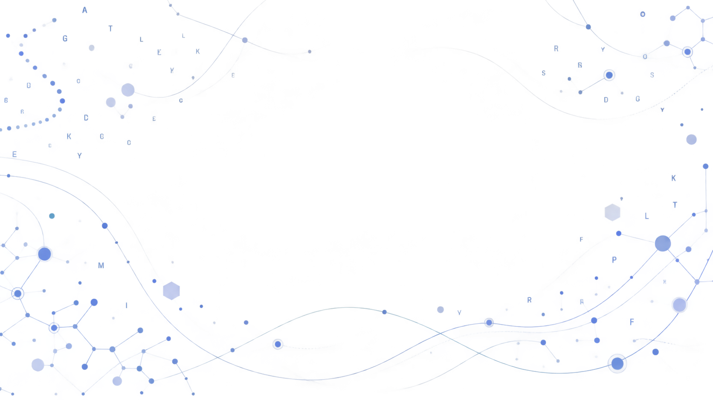
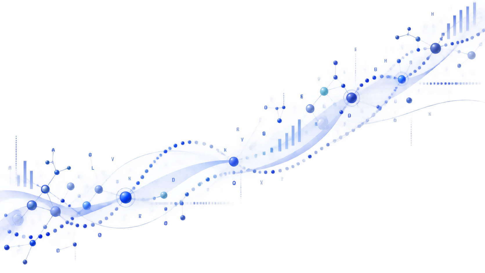
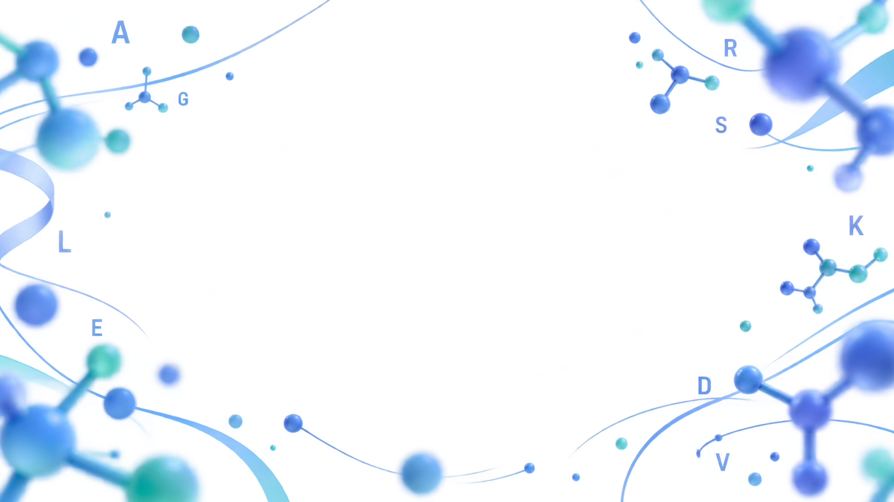
NJTECH-SYNCAR · AI–SYNBIO CHALLENGE 2026
从 1,184 个氨基酸中，寻找下一次活性跃迁。
以结构分析、高通量筛选与实验数据闭环，持续改造MAB2962羧酸还原酶。
- 序列长度
- 1,184 aa
- Round 0
- 28 个候选
- 当前最佳
- 1.118× M3

02
DISCOVERY
从结构中缩小搜索空间
多序列比对、AlphaFold3和分子对接共同把庞大的序列空间收束为可实验的候选位点。
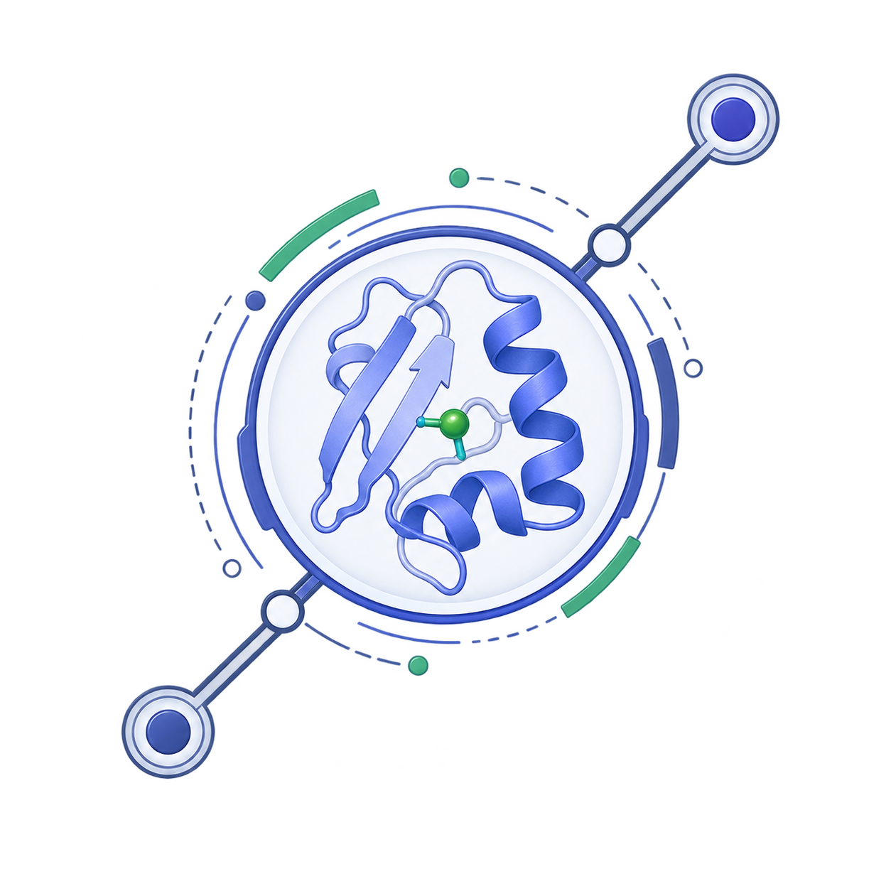
- 01多序列比对
识别进化保守位点与可耐受变异区域。
- 02结构与口袋分析
在GABA周围5 Å范围内发现16个相互作用残基。
- 03候选位点收束
剔除高度保守残基后，保留8个候选位点进入实验。
03
AI-GUIDED PRIORITIZATION
让模型缩短候选名单，
让模型缩短候选名单，
让实验决定答案。
仓库已包含面向 MAB2962 的两阶段 ESM-2 突变效应建模代码：Stage 1 做序列自适应，Stage 2 以 Concat-Delta 表征回归多位点突变效应。
当前网页状态真实模型运行时未接入 · 工作台提供明确标注的演示评分
拼接 mutant、WT 与 delta 表征
输出进入实验前的优先级建议
LEAKAGE-SAFE PIPELINE4-fold CVseed 42实验回流
04
BUILD & TEST
把候选位点送进真实实验
从质粒构建到96孔板A435nm检测，每一个结论都来自可回溯的湿实验流程。
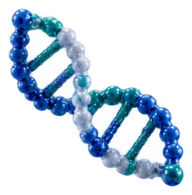
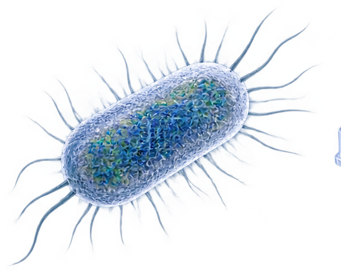
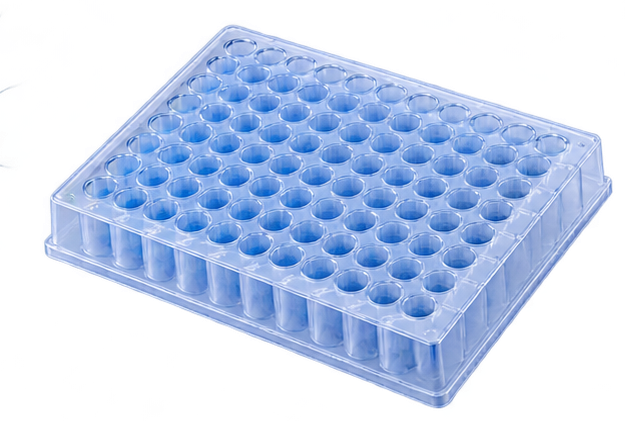
A435nm SIGNAL41 → 8 → D281P
初筛获得41个正向突变体，二次验证后保留8个，D281P相对WT提高约100%。
05
COMBINATORIAL EVOLUTION
优势位点汇聚为M3亲本
历史实验与Round 0使用不同基线；页面始终明确区分相对WT和相对M3。
06INTEGRATED VALIDATION一次预测不是终点，
一次预测不是终点，
实验反馈才形成闭环。
Design提出候选，Build完成构建，Test产生实验数据，Learn将结果带回下一轮优先级判断。
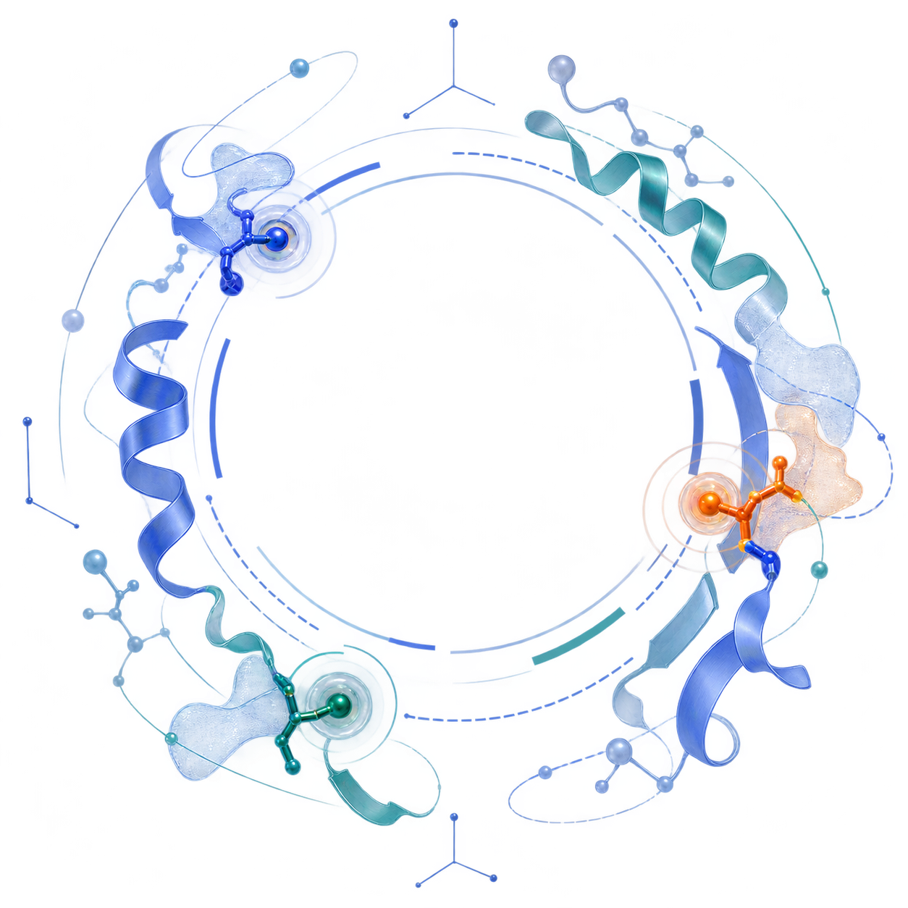
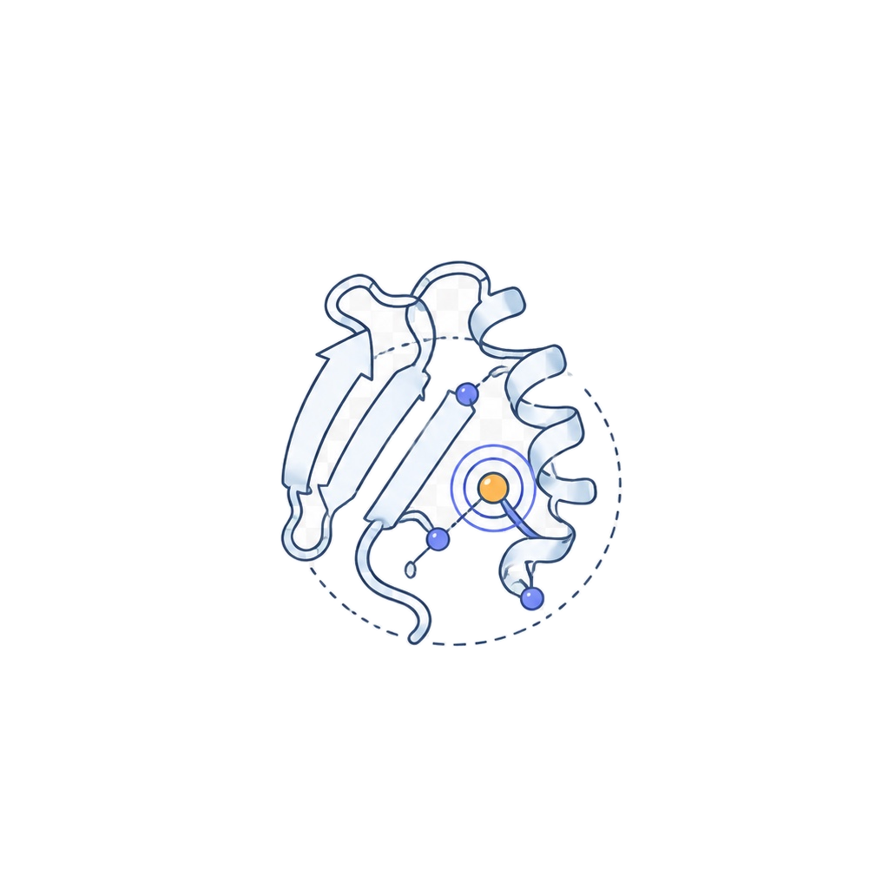
Design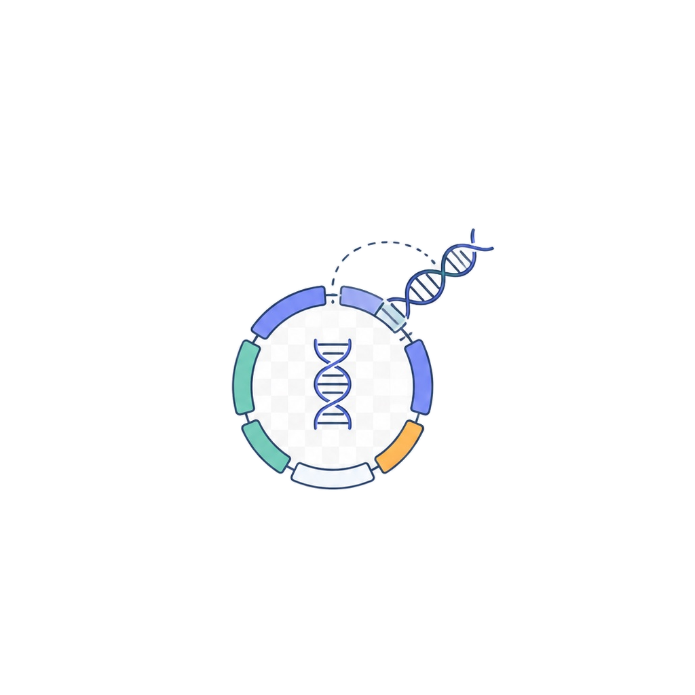
Build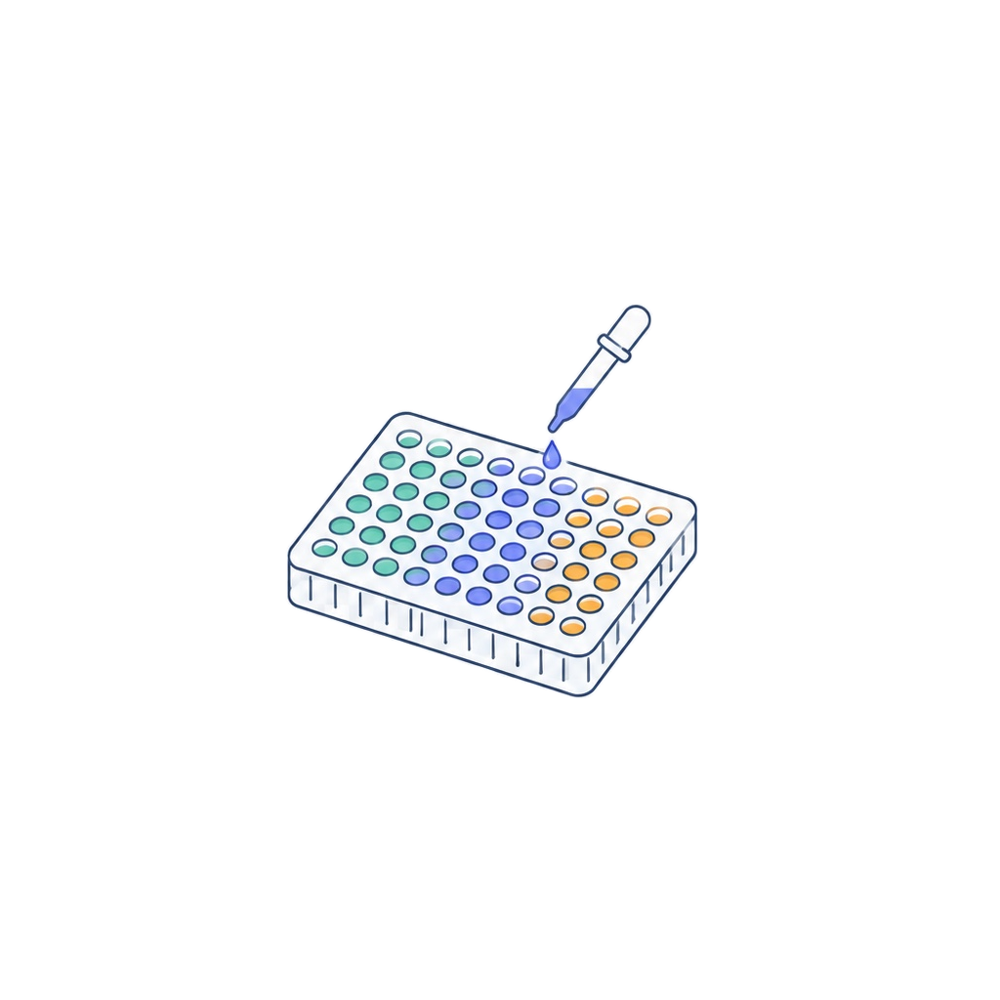
TestDBTL真实数据循环
07ROUND 0
28个四突变候选进入实验
通用zero-shot可以富集部分正向突变，但不同候选之间区分度有限。最高结果Q191R相对M3提高11.8%。
1.118× M3Q191R · 三次实验重复
M3 1.0
08
VERIFIABILITY
每个结论都能回到源文件
序列、结构、实验表和数据指纹在仓库中形成可复核的证据链。
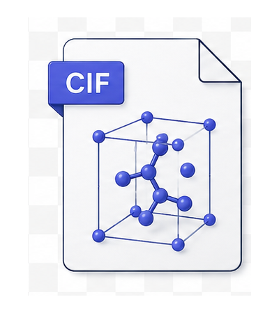
mmCIF5个AlphaFold3模型MIDTERM EVIDENCE
来源：中期进展汇报湿实验里程碑与原始图证
仅整理中期汇报中可追溯的非模型结果，点击图片可查看原图。
批次边界：下列相对 WT 结果来自历史实验批次，不能与 Round 0 的“相对 M3”数值直接合并比较。
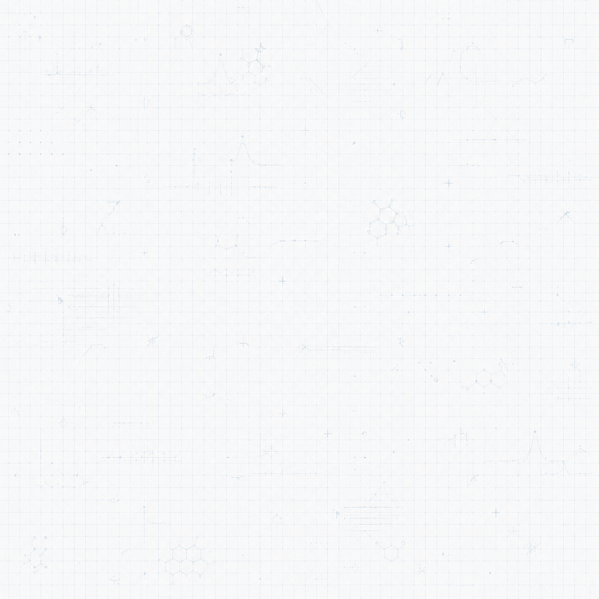
09FROM ENZYME TO MANUFACTURING
让每一轮实验，成为下一轮设计的起点。
从酶催化、反应器到产品输出，MutDesign把结构、序列和实验数据组织为可继续迭代的工程工具。
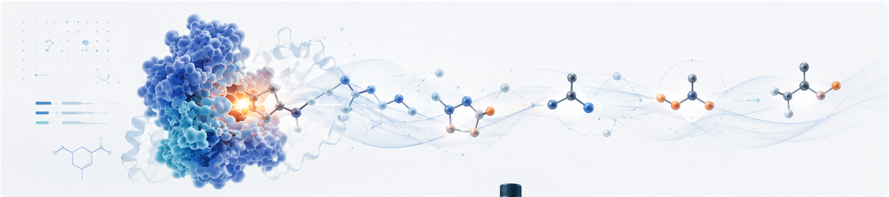
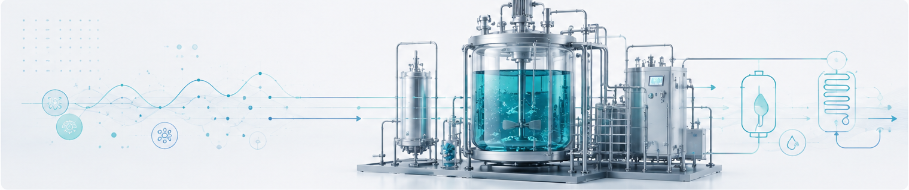
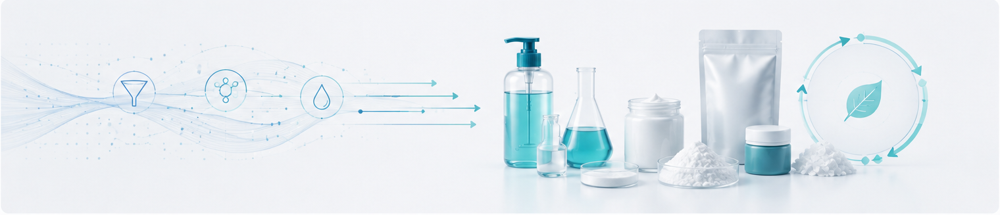


NJTech-SynCARTEAM CONSTELLATION
五位成员，同向而行。
围绕 MAB2962 的设计、实验与持续迭代，NJTech-SynCAR 五位成员共同推进同一个目标。


MEMBER 01郑天恩


MEMBER 02蔡一南


MEMBER 03郑研老师


MEMBER 04陈静雯


MEMBER 05朱宏伟
当前候选Q191R位点 191 · 点击可定位
M3 序列由 WT 按 D281P/G420W/N514S 前端生成。
Predicted Aligned Error
来自 full_data_0.json。颜色越深表示相对位置误差越低。
切换到此视图后载入真实 PAE 数据。
0 Å31.75 Å+
- 序列长度
- 1,184 aa
- 辅因子
- ATP · NADPH
- 底物
- GABA
- 金属离子
- Mg²⁺
当前显示 Q191R 的真实实验结果。
ROUND 0
来源：项目 Excel实验数据中心
28 个四突变候选、三次重复、均值、标准差与相对 M3 活性。CV 仅作描述性统计，Wiki 尚未定义验收阈值。
相对 M3 活性排序
1.0 为三突变亲本基线
| 排名 | 新增突变 | 完整构建 | 重复 1/2/3 | 均值 | SD | CV | 相对 M3 | 结论 |
|---|
BATCH DESIGN
纯前端生成位点饱和突变设计
在 WT 或 M3 亲本上生成除原残基外的 19 个候选，并导出 CSV/FASTA。
C1066 饱和候选
未进行 AI 评分，状态统一为待实验
| # | 新增突变 | 完整构建 | 亲本 | 状态 |
|---|